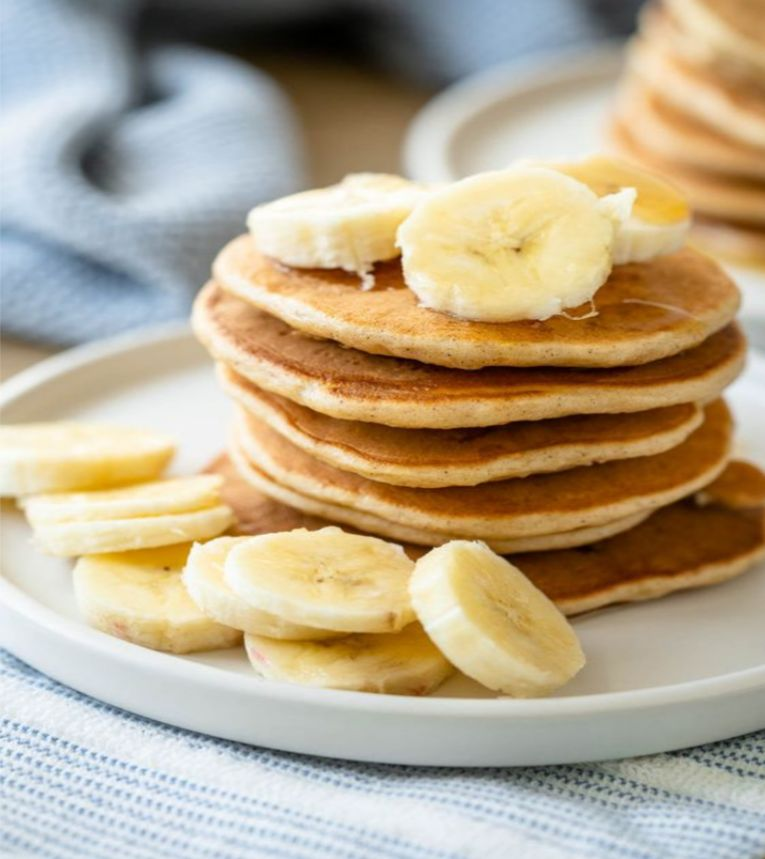

Healthy Banana Oatmeal Pancakes

Ingredients:
- 2 medium ripe bananas
- 2 eggs
- 1/2 cup unsweetened almond milk
- 1 teaspoon vanilla extract
- 1½ cups oats
- 2 teaspoons baking powder
- ½ teaspoon ground cinnamon
- ¼ teaspoon salt
- Olive oil, for cooking
Instructions:
- In a blender, combine all the ingredients and process on high until very smooth. As you preheat your pan, leave the batter in your blender.
- Spread some olive oil on a griddle and set it over medium heat. When the pan is heated, pour 1/3 cup of the batter onto the griddle for every pancake. Cook for two to four minutes, or until the edges of the pancakes begin to bubble and the pancakes begin to puff up slightly.
- Turn pancakes over and cook until undersides are golden brown. Lower the heat if you see that the pancakes are browning too soon. To avoid burning pancakes, start on medium heat and then turn it down to medium low later. When your griddle begins to smoke, it indicates that your pan is overheated.
- After cleaning the skillet, continue with additional oil and the leftover batter. Makes around 9 pancakes in all. 3 pancakes per person.
- Your banana oatmeal pancakes are ready. Enjoy your meal!